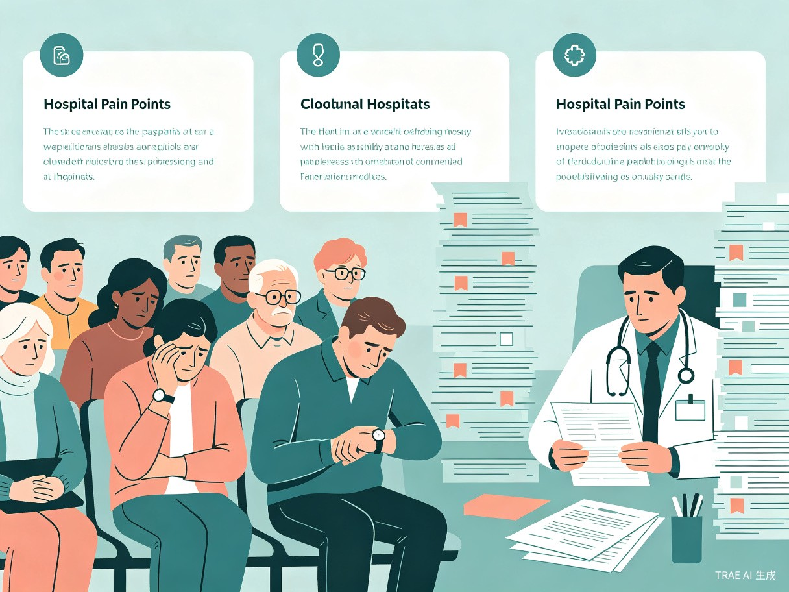
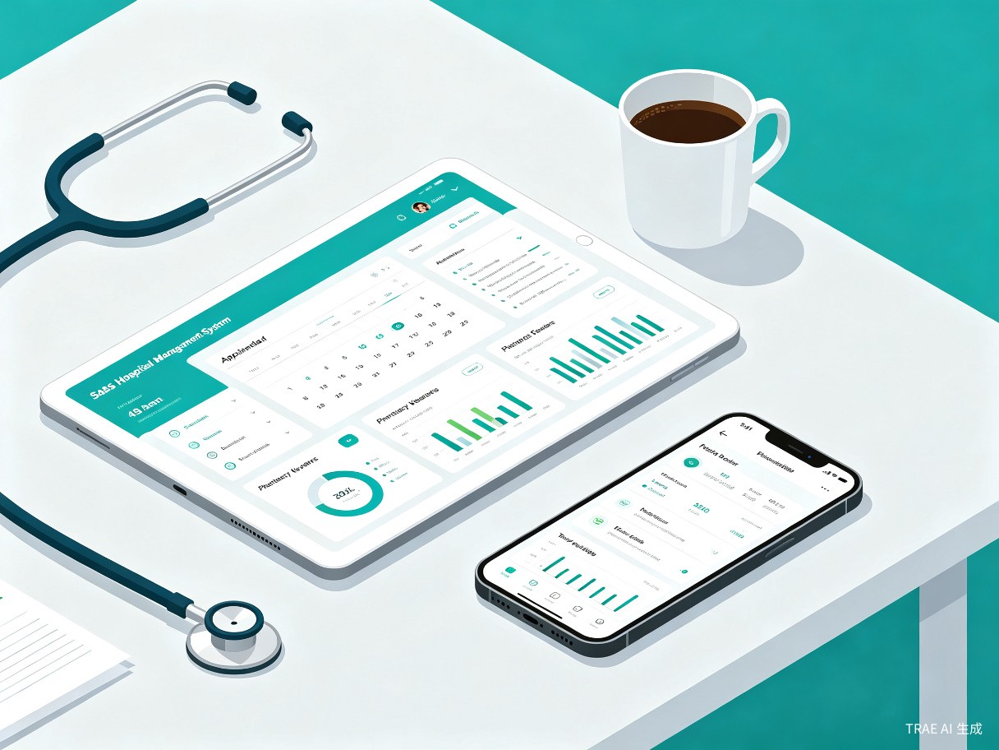

一、创意名称与创意介绍
创意名称
智医通 — 新一代智慧医院综合管理平台
想解决什么问题
当前大量中小型医院仍依赖纸质病历与人工排班，挂号排队时间长、科室间信息孤岛严重、医疗资源调配效率低下，患者就医体验差，医护人员也被繁琐的行政事务拖累，亟需一套一体化数字管理系统来打破困局。
为什么会想到做这个
多次陪家人就医时，亲历了挂号排队长、跨科室重复检查、病历资料难以共享等困境，深感现有医院信息化水平与患者期望之间存在巨大落差，希望用技术手段弥合这一差距，让医疗服务更高效、更有温度。
大概是什么产品
一套面向医疗机构的 SaaS 医院管理系统，包含 Web 端管理后台 + 医生移动端 App + 患者微信小程序，覆盖挂号、诊疗、药房、住院、财务等全流程。
二、目标用户及痛点
面向哪些用户
核心用户
中小型综合医院、专科医院、社区卫生服务中心的管理者及医护人员
次要用户
就诊患者及其家属，通过小程序完成挂号、缴费、查看报告等自助操作
在什么场景下使用
- 医院管理者 — 日常运营监控、排班调度、财务报表分析
- 医生接诊 — 快速调阅患者历史病历、开具电子处方
- 患者就医 — 线上预约挂号、查看检验报告、在线缴费
- 药房管理 — 实时接收处方信息、智能库存预警与补货
当前痛点

🔗 信息孤岛
挂号、检验、药房、住院各系统互不相通，数据需人工反复录入，极易出错
⏳ 排队拥堵
缺乏智能分诊与预约分流机制，患者扎堆候诊，平均等候时间超过 1 小时
📊 资源浪费
床位、设备、药品缺乏实时可视化调度，经常出现"有床无人"或"有药缺登记"
📈 决策滞后
管理层无法实时掌握运营数据，只能依赖月度报表做决策，响应严重滞后
三、产品功能概览
智医通围绕医院核心业务流程，构建了六大功能模块，实现从患者挂号到出院结算的全链路数字化管理。
| 功能模块 | 核心能力 | 适用终端 |
|---|---|---|
| 智能挂号与分诊 | 线上预约、AI 智能分诊、排队叫号、候诊提醒 | 小程序 / Web |
| 电子病历系统 | 结构化病历录入、历史病历检索、跨科室共享 | App / Web |
| 药房与库存管理 | 电子处方流转、智能库存预警、供应商管理 | Web |
| 住院管理 | 床位可视化调度、护理计划、出院结算 | Web / App |
| 运营数据分析 | 实时数据看板、财务报表、科室绩效分析 | Web |
| 患者自助服务 | 在线缴费、报告查询、满意度评价、健康档案 | 小程序 |

四、价值与意义
效率提升
智医通通过打通挂号、诊疗、检验、药房、住院全链路数据，将患者平均候诊时间缩短 40% 以上，医护人员行政事务处理时间减少约 50%，药品库存周转率提升 30%，真正实现"让数据多跑路、让患者少跑腿"。
社会价值
系统可帮助基层医疗机构快速补齐信息化短板，推动优质医疗资源向社区和县域下沉，缩小城乡医疗服务差距。同时，电子病历的规范化存储为区域医疗数据互联互通奠定基础，长远来看有助于支撑公共卫生监测与疾病防控决策，具有显著的社会效益。
愿景：以技术赋能基层医疗，让每一位患者都能享受到高效、便捷、有温度的医疗服务。